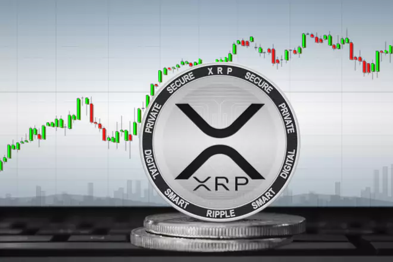

Date: November 12, 2023
On November 12, 2023, XRP experienced a significant market surge, closing at $0.7045—a 13.45% increase from the previous day. This upward movement was influenced by various factors, including market dynamics and investor sentiment.
XRP's price action on November 12 saw a high of $0.7408, marking its highest level since the speculative news about BlackRock filing for an XRP-spot ETF. The cryptocurrency's performance was characterized by increased trading volume and heightened market activity.
The surge in XRP's price coincided with broader market movements, including discussions around BlackRock's involvement in the cryptocurrency space. Such events often lead to increased volatility and speculative trading, impacting XRP's valuation.
While the price increase is notable, investors should remain aware of the inherent volatility in the cryptocurrency market. Factors such as regulatory developments, market sentiment, and technological advancements can significantly influence XRP's price trajectory.